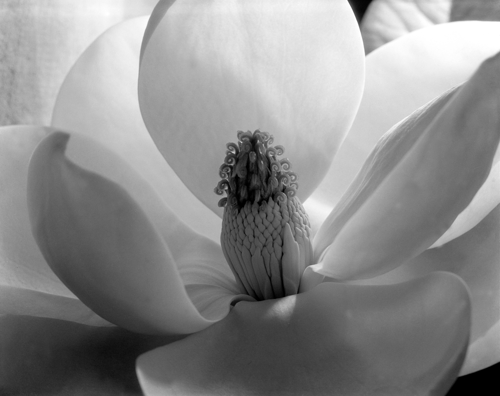

花瓣被画框截断，花茎与背景消失。五片弧面向外展开，花蕊落在中线以下：几厘米的植物，忽然有了建筑尺度。
无彩色不等于没有色彩。暖白、银灰、炭灰与近黑拉开明度；最暗、纹理最密的中心面积虽小，却拥有最大视觉重量。柔和侧逆光让表面几乎可触。
Cunningham 从早期画意摄影的柔焦，转向近摄、锐利轮廓与银盐灰阶。她 1923 年开始木兰研究；本作早于她共同创建 Group f/64 七年，已预示其清晰现代主义。
事实：Imogen Cunningham（1883–1976）是美国摄影家，题材横跨植物、人体、肖像、工业与街头。
以上为“每日艺术”的观看分析。
作品：Imogen Cunningham，Magnolia Blossom，1925，明胶银盐照片。图像：Wikimedia Commons 文件页，标为美国公版 PD-US-expired；多家馆方仍标注 © Imogen Cunningham Trust，不同法域与用途请复核。图片版权归原作者及相关权利人；赏析为“每日艺术”原创分析。